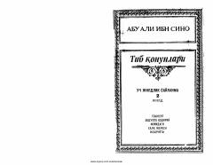

TQAbu Ali ibn Sinoning tibbiyot ilmi bo'yicha yozilgan fundamental asarining ikkinchi jildi.
Ushbu asar buyuk mutafakkir va tabib Abu Ali ibn Sinoning mashhur «Tib qonunlari» asarining uch jildlik saylanmasidan ikkinchi jildidir. Kitobda turli kasalliklar, xususan, miya va asab tizimi bilan bog'liq xastaliklar, ularning belgilari hamda davolash usullari haqida qimmatli ma'lumotlar keltirilgan.